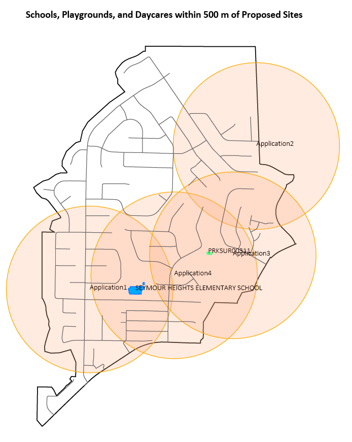

Liquor Licensing Notification Project
This project was part of a BCIT course and involved building an FME Flow app (figure 1) using FME Workbench, FME Flow, and Oracle.
Figure 1. FME Flow app
Part 1
In the first part of the project datasets were downloaded from the District of North Vancouver's data portal and processed and loaded into an oracle database using FME Workbench (figure 2):
- The downloaded file geodatabase feature classes are read into the Workbench
- Testers are performed to restrict the Neighborhoods feature class to the neighborhoods of interest and to select the appropriate buildings from Buildings
- Neighborhood was dissolved and merged into a single polygon
- Attribute creator was used on playgrounds and streets to add the necessary attributes to the tables
- A clipper is used on buildings, playgrounds and streets with dissolved neighborhoods as the clipper
- Attribute rename is used to rename table attributes to match the project data design
- All features are written out to the project database in Oracle, all unnecessary attributes are removed from the features
Figure 2. Workbench for processing and loading data into Oracle
Part 2
The second part of the project involved building the workspace that would take a spreadsheet containing the coordinates of the proposed sites and a distance as inputs and return a spreadsheet listing all the playgrounds, school, or daycares within that specified distance and a PDF map.
Figure 3 shows the first section that reads the data from Oracle and processes it for writing to a spreadsheet:
- Readers are used for the Oracle datasets and input spreadsheet with proposed site coordinates
- The spreadsheet is converted into points which are buffered to the user's specification
- These buffers are clipped by the playground and buildings to discover any intersections
- Those areas that fall within the buffer are then formatted properly for the output spreadsheet by modifying attributes and adding values where needed
- A tester is used to select daycares for the second section of the workspace (figure 4)
- Finally, the output of NullAttributeMapper is connected to an Excel writer (figure 4) which writes the results to a spreadsheet (table 1)
Figure 3. Workbench for processing data to be written to a spreadsheet and PDF map (1/2)
Figure 4 shows the second section that is dedicated to creating the PDF map:
- The uppermost transformers are used for adding a dynamic map title that displays the buffer distance user parameter in it
- The AttributeCreator creates the _order field and populates it with a number corresponding to the map layer render order
- The Label Handling bookmark includes transformers that create labels and remove any duplicates which can be an issue in FME
- The PDF styler bookmark styles all the map layers
- Map vector layers are sorted by _order and then fed into the PDF Page Formatter along with the map text items
- Finally, the PDF is written (see figure 5 for an example output)
Figure 4. Workbench for processing data to be written to a spreadsheet and PDF map (2/2)
Figure 5. PDF output showing map of buildings and playgrounds that fall within the buffer distance of proposed sites
| Site | Name | Type | Subtype | AssetID | ParkID |
|---|---|---|---|---|---|
| Application1 | SEYMOUR HEIGHTS ELEMENTARY SCHOOL | School | ELEMENTARY | - | - |
| Application1 | SEYMOUR HEIGHTS ELEMENTARY SCHOOL | School | ELEMENTARY | - | - |
| Application3 | - | Playground | - | PRKSUR00311 | PARK00035 |
| Application3 | - | Playground | - | PRKSUR00307 | PARK00035 |
| Application4 | SEYMOUR HEIGHTS ELEMENTARY SCHOOL | School | ELEMENTARY | - | - |
| Application4 | SEYMOUR HEIGHTS ELEMENTARY SCHOOL | School | ELEMENTARY | - | - |
| Application4 | - | Playground | - | PRKSUR00311 | PARK00035 |
| Application4 | - | Playground | - | PRKSUR00307 | PARK00035 |